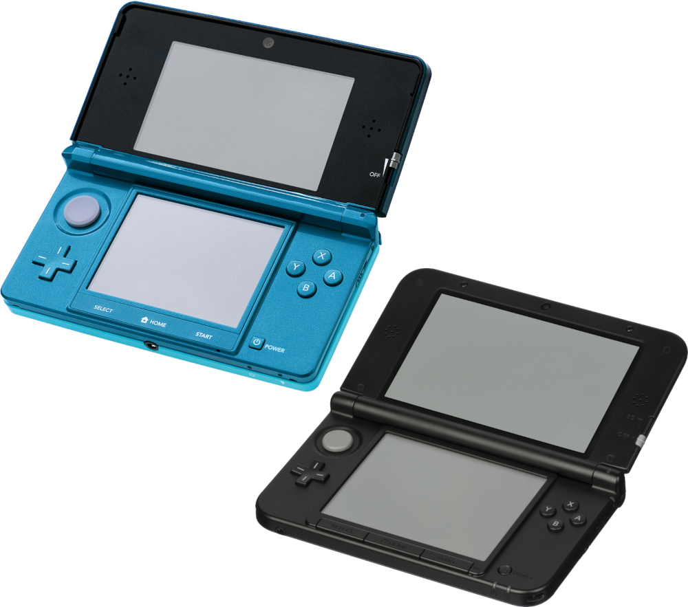
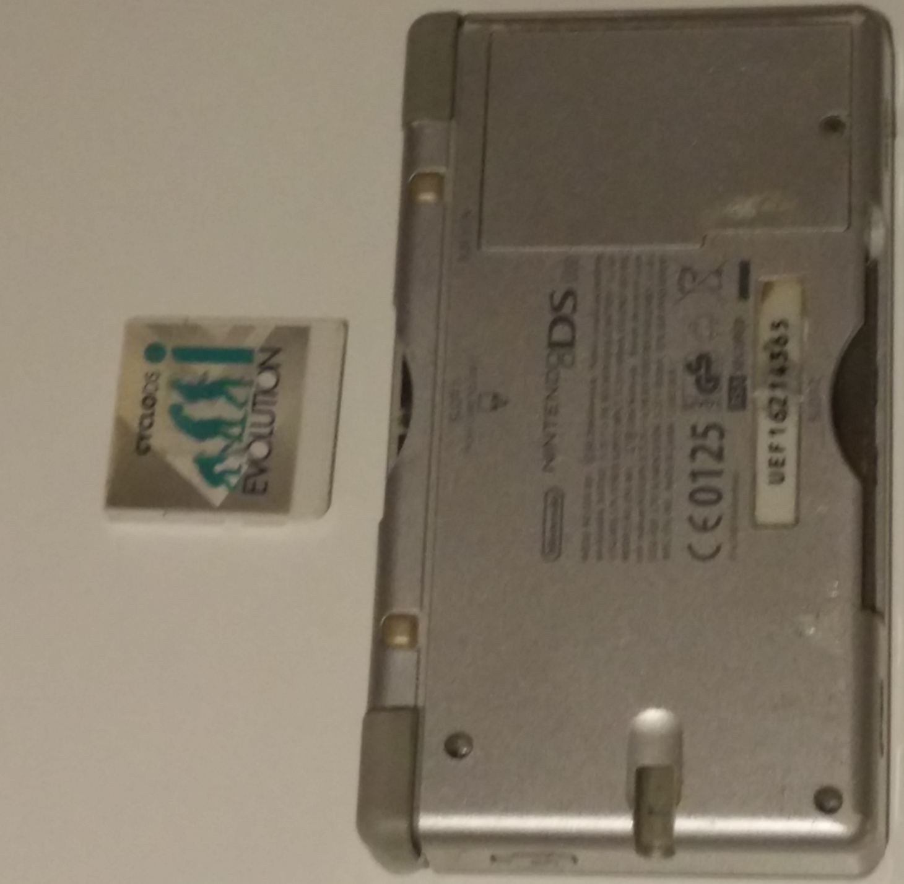
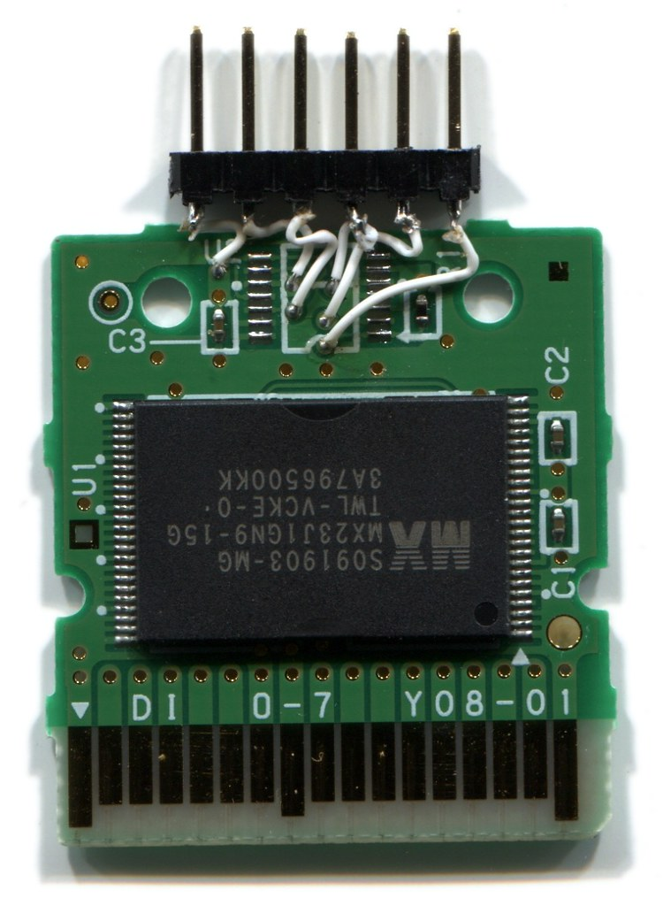
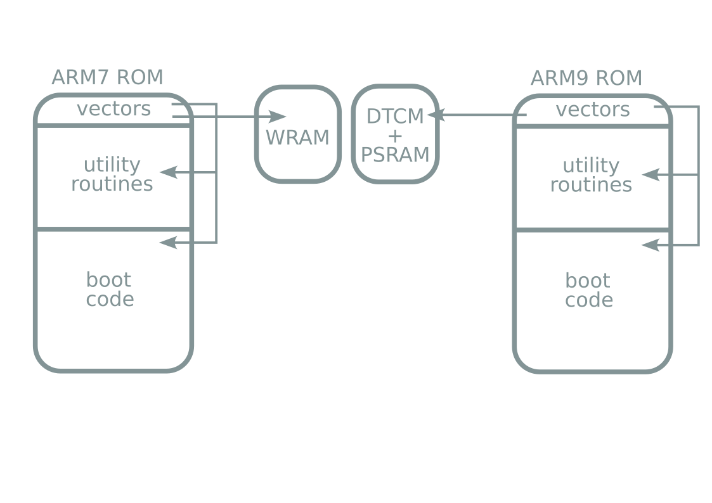
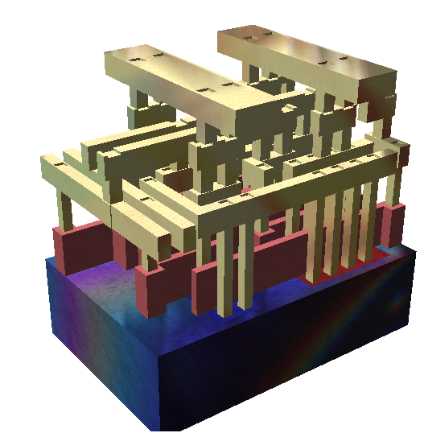

Console hacking 2023: 2008
Finishing off the Nintendo DSi
PoroCYon
What are we talking about?
|  | ||
NDS hacking
Cartridge encryption:- First Nintendo console to use cryptography
- ... only symmetric cryptography
After key extraction
Nintendo didn't like this
So they used public-key cryptography for the DSi
Background
We can't be the first ones to look into the DSi, right?
-
scanlime's RAM tracer (2009)
 - ... and nothing else happened
- 3DS got released (2011)
-
... and badly hacked (2015, 2016)
-
Unlaunch (2018): DSi bootcode exploit
Problem solved, right?
Not so fast
- Unlaunch has some quirks
- Unlaunch exploits the second-stage bootloader:
- Modifies eMMC in unfun ways
eMMC erase-write lifetime is bad:
- No bootrom dumps yet :<
We want the bootrom!
Secure boot strikes back
Can't we just replace the eMMC chip?
- eMMC CID (Card ID) used to derive FAT FS encryption key
- And many other things
- ConsoleID (fuses) also used as key material
eMMC replacement won't work :(
Hardware
Boot process
3DS TWL mode
- 3DS includes hardware switch to enter DSi mode
- Implemented in low-level firmware
- DSi mode runs standard second-stage bootloader
Unlaunch origin story
Boot process takeaways
- eMMC dead → everything fails
- Second stage happens after eMMC signature check
- Unlaunch happens here!
- Dead eMMC → Unlaunch won't save you
Need early code execution.
Finding vulnerabilities in a black box sucks
So we need to dump these bootroms first
Backporting a 3DS hack
Extract boot ROM using fault injection
Vector-glitch hack


- ARM7 code execution
- In boot ROM
People already tried this...
Voltage glitching woes
(note: this is a simplification)

Electromagnetic fault injection
ARM7 ROM unlocked
SHA3-256:
ccc5cce4ece3204e6ece25bdf5684004 3375ce1771fb998ed9f641ca9fe00bc1
But...
ARM7 ROM only contains I/O driver code, no cryptography
- We need the ARM9 boot ROM!
Backporting more hacks?
- 3DS: use one core to take over other cores
Doesn't work on DSi :(
Vector-glitch hack on ARM9
Also not possible :(
Time for more glitching
Another setup
from stuckpixel and Normmatt
In action
ARM9 ROM unlocked
SHA3-256:
cb886a6a02164ee8d4e1409d6e4c9bec 9736958e6e879f3ea7e44561ab667c6f
What now?
Look for vulnerabilities!
- Does it have sighax?
- Does it have ntrboot?
Boot medium selection
- Magic key combo + lid closed? → NDS Gamecart
- Bit set in SPI boot configuration? → eMMC
- Else (or eMMC fails) → SPI
Boot procedure
Boot header & signature format
Boot procedure

Signature format?
No bug here :(
⇒ no sighax :(
Attacking SHA1
"SHA1 is unsafe!"
SHA1 collision attack known Find x and y (x ≠ y) s.t. H(x) = H(y)
... we need a second preimage Given x: find y ≠ x s.t. H(x) = H(y)
Attacking RSA-1024
How to attack RSA:
Lol, no
This still takes too much processing power
... but these public keys were generated in 2005... maybe they made a mistake here?
No dice
NSA please help us & factor these public keys
- GCD: cc 98 7b 41 7d 9d 7c 80 02 85 db 10 99 8c d4 a7 86 7a ef da 43 a9 6d 0b 55 b0 10 73 67 99 c2 d9 f0 72 d6 fb 1d a6 17 9a 77 89 87 e7 e8 c8 c0 86 36 bf 5d 2c d7 5a 1f ea e0 4f 66 c7 83 a8 33 f4 93 73 9e 3a 97 70 52 5e 3d 9d 0e ed 50 4f d6 5f c4 36 71 91 c4 16 81 ca cf 92 4e ad 1c 32 70 dc 58 e5 89 89 a3 6a 09 43 90 f3 f1 8e 40 4f b7 f1 68 7f 30 f7 6d 00 8a 9c d4 87 25 4a 98 c9 66 2f
- eMMC: f1 f5 1a ff 66 f9 b3 69 4d cb 78 de af 31 1b 78 3c 07 2a ac 94 30 11 11 4a 1c f6 fe 62 b0 91 b5 ef 0e ba 3a a9 ec 3e a0 1c 5d f6 66 65 3e 18 df 22 53 3b d5 e8 d6 ff 58 97 0b 24 e8 86 fa 87 8b 62 66 99 24 a8 fa 87 f2 74 00 4f ea 2f f6 23 e1 f2 90 7c a4 67 1f ca 28 3e 86 b6 ca c5 46 a7 9c 75 c8 0f eb 32 88 2c 3d 1d f7 d5 dc 1a 19 98 e9 f6 26 d4 fc 76 cb 23 13 58 cb 43 a9 b3 cb a3 c5
- SPI: b8 5f 0f db 26 2c 1a fc f8 6e 37 a7 cd d2 11 d4 55 20 3c a8 fb 10 6e de c7 03 6e d7 d6 36 3b 66 33 f4 d6 27 58 65 b6 32 b9 27 7a 74 ce 1d 41 db d9 6a 04 86 ee 72 71 b3 86 73 a0 3b 83 48 62 7b 22 a2 0b 77 38 dd 02 73 76 c4 f8 52 3d ea 5c 6f 5d f2 62 e4 5f 7a 90 1c 16 a1 8c ff 05 88 86 2e 1c 82 62 76 c8 ac 79 87 f0 a1 d5 7d 93 99 d5 cd 5d 48 55 4d 30 31 5d c1 b1 5a 32 45 11 f9 11 cb
- e = 65537
Code vulnerabilities
-
Payload size and load address never checked
- Caught by RSA signature
RSA padding oops
What now?
There's almost a bug here...
So let's make one!
Even more glitching
Two birds with one stone
Escalation

Baby's first ropchain
Escalation
- ARM7 and ARM9 code execution
- Before boot ROM lockout
- With only one glitch
That sounds nice in theory, but...
how do we implement this in practice?
Testing in melonDS
Flip 1 bit in boot ROM binary → exploit works
Testing with lab setup
Development of a modchip
-
What boot medium?
- Gamecart? Can't use FIFO+LZ needed for exploit
- eMMC? Annoying to reflash without other exploit
- SPI, which sits on the WiFi daughterboard
-
What glitching method?
- EMFI? Not practical
- Voltage glitching
-
What form factor?
- WiFi interposer/replacement
Design
In action
Demo time
Recap
- Dump ARM7 ROM using vector glitch hack
- Dump ARM9 ROM using double glitch hack
- Find weak spot in ARM9 ROM against glitching attacks
- Develop new glitching exploit
- Make modchip for this exploit
Conclusion
- DSi is better secured than 3DS
- Most of this was possible due to 3DS stage2 leak
- "Secrets hidden in hardware are great, unless you leak them" -32c3
Thanks
- stuckpixel & Normmatt
- Arthur & Lennert for glitching help
- nocash for Unlaunch
- Arisotura and contributors for melonDS
- #melonDS, #GodMode9, ReSwitched, ...
- Nintendo for the fun challenge
Releases
- Glitching setups: PoroCYon, stuckpixel & Normmatt
- melonDS patches: already upstreamed!
- People are already using this to find new exploits!
- Documentation: DSiBrew
- Modchip firmware
- Exploit payload & new initcode
- Modchip PCBs... later
- Needs more bugfixing (can't fix hardware after fabrication!)
- DIY guide with RP2040 devboard
Boot ROM dumps for all!
TODO
Draw the rest of the owl:- Modchip:
- Auto parameter training
- WiFi passthrough
- DSi ↔ modchip communications
- Payload:
- Init all DSi hardware
- SD card loader
All help is welcome!
Questions?
Image credits
- Console photos: Evan Amos (PD)
- Interconnect layers: David Carron (PD)